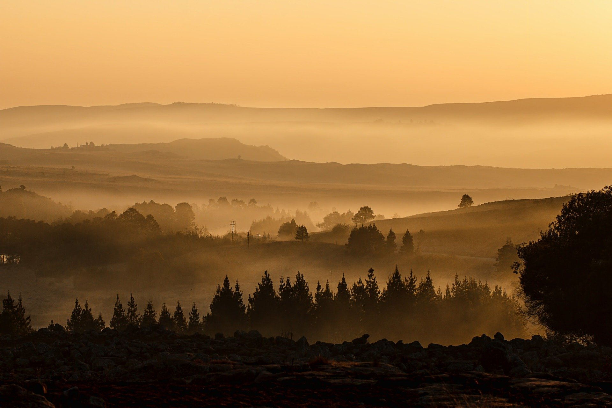

Mountains
It’s always further than it looks. It’s always taller than it looks and it’s always harder than it looks.A great snow trek for first-timers, Kedarkantha is a peak in the Garhwal Himalayas.
Beaches
Sky above, sand below, peace within. Look up at the cerulean blue sky. Feel the warm sugar sand between your toes. Find inner peace with all of the Gulf Coast beauty that surrounds you. It's so easy to be relaxed here.That's why Beaches are always my favorite destinations.